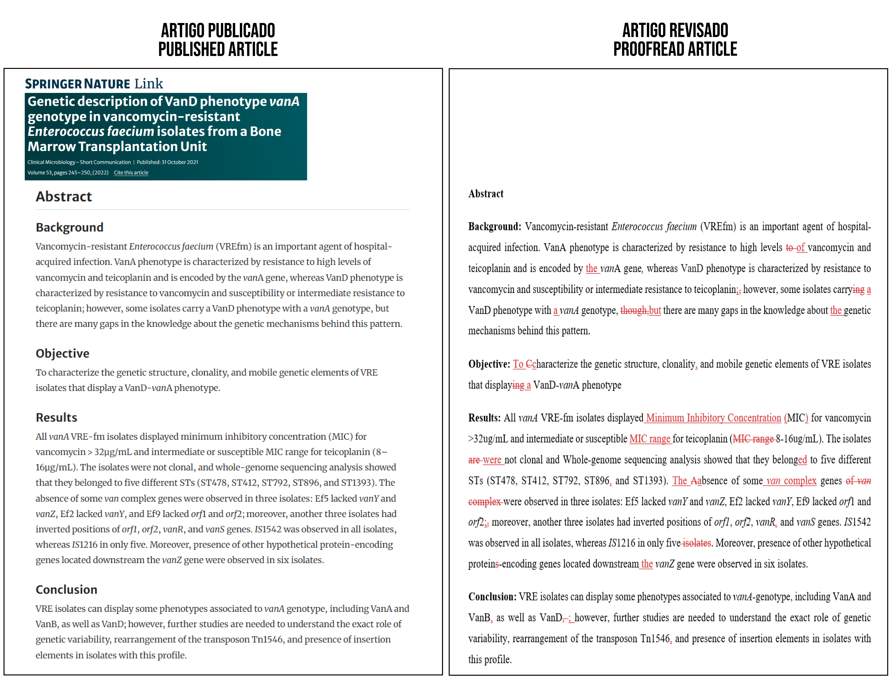
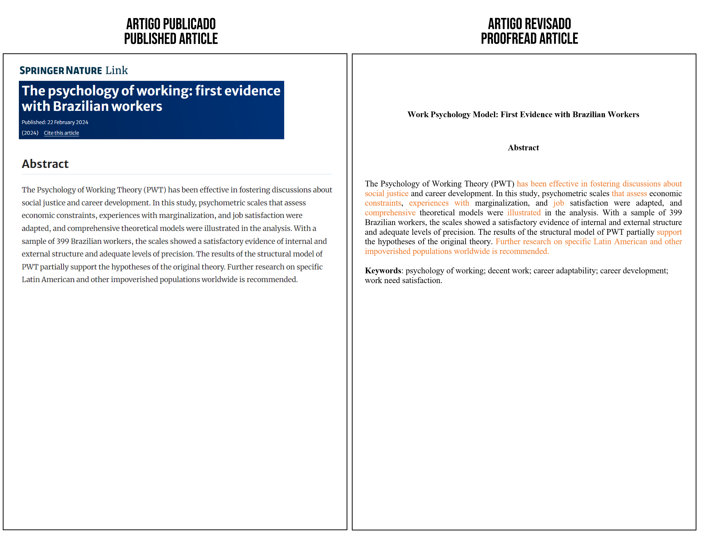
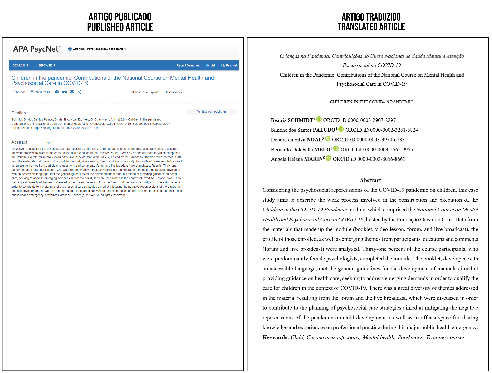
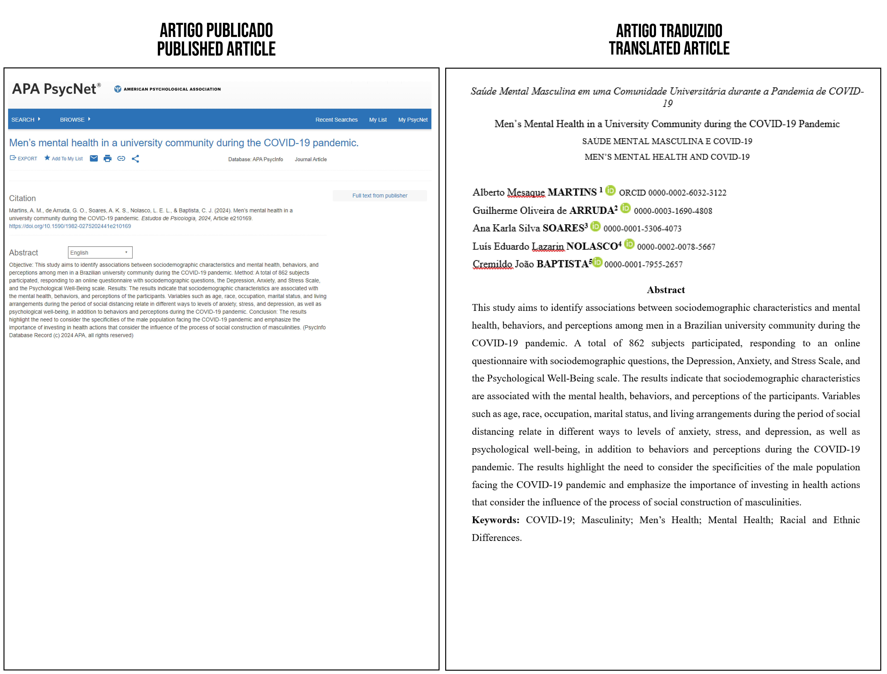

CLICK THE IMAGE FOR A HIGHER RESOLUTION
Link to Article

CLICK THE IMAGE FOR A HIGHER RESOLUTION
Link to Article

CLICK THE IMAGE FOR A HIGHER RESOLUTION
Link to Article

CLICK THE IMAGE FOR A HIGHER RESOLUTION
Link to Article
| Journal/Database | Article | Link | Publication Date |
|---|---|---|---|
| APA PsycNet | Children in the Pandemic: Contributions of the National Course on Mental Health and Psychosocial Care in COVID-19 | Link | 2024 |
| SciELO | Estudos de Psicologia | Elderly and Youth: Reflections... | Link | 2024 |
| SciELO | Estudos de Psicologia | The impact of passion for exercising on the perception of well-being during periods of social isolation | Link | 2024 |
| SciELO | Estudos de Psicologia | Psychology in the hospital context: experiences of patients with non-communicable chronic diseases | Link | 2024 |
| SciELO | Estudos de Psicologia | Health professional action grounded in Carl Rogers' theory | Link | 2024 |
| SciELO | Estudos de Psicologia | Historiography and empathy: Critical School Psychology actions on self-injury practices | Link | 2024 |
| SciELO | Estudos de Psicologia | Child Development and Adaptation: Relation Between Jungian Propositions and the Concept of Adaptive Functioning | Link | 2024 |
| APA PsycNet | Hair and Meanings of Ethnic-Racial Belonging in Girls' Conversations | Link | 2024 |
| SciELO | Estudos de Psicologia | Mothers' life context and coping in childhood cancer remission | Link | 2024 |
| SciELO | Estudos de Psicologia | Self-guided interventions for Social Anxiety Disorder: a systematic literature review | Link | 2024 |
| SciELO | Estudos de Psicologia | Parents’ Social Representations about distance learning for children during the COVID-19 pandemic | Link | 2024 |
| SciELO | Estudos de Psicologia | The Construction of Dangerousness in Accounts about Users of Substitute Mental Health Services | Link | 2024 |
| SciELO | Estudos de Psicologia | Intervention Research and Psychology in Brazil: A systematic literature review | Link | 2024 |
| SciELO | Estudos de Psicologia | Psychometric evaluation of the Brazilian version of the Maternal-Fetal Attachment Scale | Link | 2024 |
| SciELO | Estudos de Psicologia | Study Group in Afro-centered Psychology | Link | 2024 |
| APA PsycNet | Men’s Mental Health in a University Community during the COVID-19 Pandemic | Link | 2024 |
| SciELO | Estudos de Psicologia | Racism in early childhood education: a systematic review | Link | 2024 |
| SciELO | Estudos de Psicologia | Emotional Impact of breast cancer-related genetic mutation diagnosis: a systematic review | Link | 2024 |
| SciELO | Estudos de Psicologia | Investigation of attentional bias in anxiety through exposure to facial expressions: An eye-tracking study | Link | 2024 |
| SciELO | Psico-USF | Comparison of methods for controlling acquiescence bias in balanced and unbalanced scales | Link | 2024 |
| SciELO | Estudos de Psicologia | Psychological Care in a COVID-19 Intensive Care Unit: psychologists' experiences | Link | 2024 |
| SciELO | Estudos de Psicologia | Symptoms of depression and stress hinder professors’ creativity: a study during the pandemic | Link | 2024 |
| SciELO | Estudos de Psicologia | Grieving process of families who lost their loved ones by COVID-19: an integrative review | Link | 2024 |
| SciELO | Estudos de Psicologia | Self-care in adults with type 1 diabetes mellitus: Analysis of glycemic control | Link | 2024 |
| Archives of Veterinary Science | Machine learning for determining the stage of the estrous cycle in bitches | Link | 2024 |
| SciELO | Revista Brasileira de Fruticultura | Delayed winter pruning in ‘Chardonnay’ and ‘Pinot Noir’ (Vitis vinifera L.) in Serra Gaúcha – an alternative for late frost? | Link | 2024 |
| Springer Nature | The psychology of working: first evidence with Brazilian workers | Link | 2024 |
| SciELO | Estudos de Psicologia | Explanatory Factors of Suicide from the Indigenous Perspective: A Literature Review | Link | 2024 |
| SciELO | Estudos de Psicologia | Neurobiological origins of impulsive behavior in adolescence: possibilities of physical exercise | Link | 2024 |
| SciELO | Estudos de Psicologia | Narratives of social educators on practices in institutional foster care | Link | 2024 |
| SciELO | Estudos de Psicologia | Adaptation and psychometric properties of the Anxiety Symptoms Questionnaire (ASQ) for Brazil | Link | 2024 |
| SciELO | Estudos de Psicologia | Systematic Review: conceptions and strategies for measuring subjective poverty | Link | 2024 |
| SciELO | Estudos de Psicologia | Positive health: approaching health from a psychological perspective of well-being | Link | 2024 |
| SciELO | Estudos de Psicologia | Suicidality: a Concept in Perspective | Link | 2024 |
| SciELO | Estudos de Psicologia | Integrative Review of the Brazilian Literature on Batterers | Link | 2024 |
| SciELO | Psicologia: Teoria e Pesquisa | Sociodemographic and Behavioral Factors Associated with Psychological Well-being in a Brazilian Academic Community during the COVID-19 Pandemic | Link | 2024 |
| SciELO | Estudos de Psicologia | Association between Illness Perception, Treatment Adherence, and Emotional State in HIV/AIDS | Link | 2024 |
| SciELO | Estudos de Psicologia | Decolonial, Countercolonial, Yet To come Psychology? | Link | 2024 |
| SciELO | Estudos de Psicologia | Contributions of Indigenous Knowledge to the Reterritorialization of Social Psychology | Link | 2024 |
| PubMed | Follow-up of immediate postpartum intrauterine device insertion: a scoping review protocol | Link | 2024 |
| PubMed | Increase in mucormycosis hospitalizations in southeast Brazil during the COVID-19 pandemic: a 2010–2021 time series | Link | 2023 |
| AJIC | Impact of COVID-19 RT-PCR Testing in Asymptomatic Health Care Professionals on Absenteeism and Hospital Transmission during the Pandemic | Link | 2023 |
| PubMed | Mobile application for adherence to diabetic foot self-care: randomized controlled clinical trial | Link | 2023 |
| PubMed | Mobile application for adhering to diabetic foot self-care: randomized controlled clinical trial | Link | 2023 |
| Injury Journal | Magnitude and factors associated with motor vehicle accident injuries in Brazil: results from the National Health Survey, 2019 | Link | 2023 |
| PubMed | Medication reconciliation in pediatrics: a validation of instruments to prevent medication errors | Link | 2023 |
| PubMed | Outline of a project for nursing health education on the Instagram social network | Link | 2023 |
| PubMed | The use of toys by nursing as a therapeutic resource in the care of hospitalized children | Link | 2023 |
| The Open AIDS Journal | Consumption of sexually explicit media and sexual conducts of greater exposure to HIV/AIDS in Brazilians | Link | 2023 |
| Biblioteca Virtual em Saúde / Virtual Health Library | Board game for children with autism: developing autonomy and social skills | Link | 2023 |
| PubMed | Correlation between symptoms of depression, attitude, and self-care in elderly with type 2 diabetes | Link | 2023 |
| Biblioteca Virtual em Saúde / Virtual Health Library | Sleep, anxiety and depression symptoms, and physical activity in healthcare professionals during Covid-19 pandemic | Link | 2023 |
| PubMed | Professional burnout and patient safety culture in Primary Health Care | Link | 2023 |
| PubMed | Epidemiology of monkeypox notifications in the state of Minas Gerais, Brazil | Link | 2023 |
| APA PsycNet | Symptoms of stress, anxiety, and depression in university students during the COVID-19 pandemic | Link | 2023 |
| APA PsycNet | Adoption in the School Context: Exploring Perspectives | Link | 2023 |
| Biblioteca Virtual em Saúde / Virtual Health Library | Prediction of Psychological Capital in university students: Career Resources, Employability, and Adaptability | Link | 2023 |
| PubMed | Evaluation of sarcopenia components and perceived quality of life of individuals on hemodialysis | Link | 2023 |
| SciELO | Estudos de Psicologia | Training psychologists in the State of Piauí – discussing Brazil’s racial questions | Link | 2023 |
| SciELO | Estudos de Psicologia | Translation and cultural adaptation of the COVID-19 Anxiety Scale in Brazil | Link | 2023 |
| SciELO | Estudos de Psicologia | Parental Perspective on the Psychological Adjustment of Children in Cancer Relapse or Remission | Link | 2023 |
| SciELO | Estudos de Psicologia | Factors associated with above-average cognitive performance in long-lived older adults | Link | 2023 |
| APA PsycNet | Emotional Dysregulation Scale – Child and Adolescent (EDEIJ): Validity evidence | Link | 2023 |
| PubMed | Phenotypic and genotypic characteristics of a Carbapenem-resistant Serratia marcescens cohort and outbreak: describing an opportunistic pathogen | Link | 2022 |
| AJIC | Adherence to non-pharmacological preventive measures among healthcare workers in a middle-income country during the first year of the COVID-19 pandemic: hospital and community setting | Link | 2022 |
| PubMed | Evaluation of eleven immunochromatographic assays for SARS-CoV-2 detection: investigating dengue cross-reaction | Link | 2022 |
| Springer Nature | Genetic description of VanD-phenotype vanA-genotype in vancomycin-resistant Enterococcus faecium isolates from a Bone Marrow Transplantation Unit | Link | 2022 |
| MedRxiv | Application of aptamer technology in enterobacteria and non-fermenters: literature review | Link | 2022 |
| Frontiers | Selection and identification of a DNA aptamer for multidrug-resistant Acinetobacter baumannii using an in-house cell-SELEX methodology | Link | 2022 |
| PubMed | Aplastic anemia and Chagas disease: T. cruzi parasitemia monitoring by quantitative PCR and preemptive antiparasitic therapy | Link | 2022 |
| PubMed | Factors associated with symptoms of physical and emotional burden in informal caregivers of the elderly | Link | 2022 |
| PubMed | Validation of the Brazilian Portuguese version of the Venous International Assessment scale and proposal for its revision | Link | 2022 |
| PubMed | Construction and validation of clinical scenarios for training informal caregivers of dependent persons | Link | 2022 |
| Biblioteca Virtual em Saúde / Virtual Health Library | Health promotion of university students: the influence of social skills | Link | 2022 |
| Biblioteca Virtual em Saúde / Virtual Health Library | Instrument for implementing the nursing process during ostomate consultation: an experience report | Link | 2022 |
| PubMed | Repercussions of the labor reform on nursing work in the context of the COVID-19 pandemic | Link | 2022 |
| PubMed | Non-pharmacological analgesia strategies in adult and elderly endovascular procedures: a scoping review | Link | 2022 |
| PubMed | Nursing staff's instrument for change-of-shift reporting – SBAR (situation-background-assessment-recommendation): validation and application | Link | 2022 |
| PubMed | Effectiveness of implementing an improvement cycle in the identification of critically ill patients | Link | 2022 |
| PubMed | Core competencies for the training of advanced practice nurses in oncology: a Delphi study | Link | 2022 |
| PubMed | Effects of the economic recession on suicide mortality in Brazil: interrupted time series analysis | Link | 2022 |
| PubMed | Universal health system based on Primary Care and advanced practice nursing | Link | 2022 |
| PubMed | Training of teachers in the Health field from the perspective of interprofessional education | Link | 2022 |
| PubMed | Functional respiratory re-education interventions in people with respiratory disease: a systematic literature review | Link | 2022 |
| PubMed | Applying the Safe Child® Method for inserting earrings in children’s earlobes | Link | 2022 |
| PubMed | Art in evidence-based nursing practice from the perspective of Florence Nightingale | Link | 2022 |
| PubMed | Is self-esteem associated with the elderly person's quality of life? | Link | 2022 |
| PubMed | Psychometric evaluation of the Resilience at Work Scale (RAW Scale – Brazil) | Link | 2022 |
| PubMed | Critically ill COVID-19 patients: a sociodemographic and clinical profile and associations between variables and workload | Link | 2022 |
| PubMed | Access to government social programs and the tuberculosis control program: a multicenter study | Link | 2022 |
| PubMed | Clinical simulation as a Nursing Fundamentals teaching method: a quasi-experimental study | Link | 2022 |
| PubMed | Clinical progression of COVID-19 coinfection in people living with the human immunodeficiency virus: scoping review | Link | 2022 |
| PubMed | Continuity of care for children with special health needs during the COVID-19 pandemic | Link | 2022 |
| PubMed | Information and communication technologies: Interfaces of the nursing work process | Link | 2022 |
| Wiley | Carbapenem-resistant Serratia marcescens bloodstream infection in hematopoietic stem cell transplantation patients: Will it be the next challenge? | Link | 2021 |
| PubMed | Effectiveness of surveillance cultures for high priority multidrug-resistant bacteria in Hematopoietic Stem Cell Transplant Units | Link | 2021 |
| PubMed | Genetic factors involved in fosfomycin resistance of multidrug-resistant Acinetobacter baumannii | Link | 2021 |
| Annals of Clinical Microbiology and Antimicrobials | Bloodstream Infections caused by Klebsiella pneumoniae and Serratia marcescens isolates co-harboring NDM-1 and KPC-2 | Link | 2021 |
| Wiley | The Brazilian view of antimicrobial stewardship programs and organ transplantation | Link | 2021 |
| Wiley | Excess of glucocorticoids during late gestation impairs the recovery of offspring’s β-cell function after a postnatal injury | Link | 2021 |
| PubMed | Factors associated with the knowledge and attitude of adolescents regarding male condom use | Link | 2021 |
| PubMed | Suicide in Indigenous and Non-Indigenous Population: A Contribution to Health Management | Link | 2021 |
| PubMed | Health promotion in coping with COVID-19: a Virtual Culture Circle experience | Link | 2021 |
| PubMed | Reiki therapy in the Unified Health System: meanings and experiences in integral health care | Link | 2021 |
| PubMed | Self-care of people with intestinal ostomy: beyond the procedural towards rehabilitation | Link | 2021 |
| PubMed | Reflections on elderly autonomy and its meaning for the practice of nursing care | Link | 2021 |
| PubMed | Instructor-led oral debriefing technique in clinical nursing simulation: integrative review | Link | 2021 |
| PubMed | Reflections on patient safety incident reporting systems | Link | 2021 |
| PubMed | Integrative review on the incidence of HIV infection and its socio-spatial determinants | Link | 2021 |
| PubMed | Information that (de)motivate women's decision making on planned home birth | Link | 2021 |
| PubMed | Associativism in Nursing, Public Communication, and Interaction with the Media | Link | 2021 |
| PubMed | Specialized Nursing Terminology for the Care of People with COVID-19 | Link | 2021 |
| PubMed | Factors Associated with Anxiety in Multiprofessional Health Care Residents during the COVID-19 Pandemic | Link | 2021 |
| PubMed | Entrepreneurial Management Technology for Nursing Professionals | Link | 2021 |
| PubMed | Microbiological Profile of Leg Ulcer Infections: Review Study | Link | 2021 |
| PubMed | Nursing Training on the Administration of Medication in Pediatrics: an Assessment of Observed and Self-Reported Behavior | Link | 2021 |
| PubMed | Theoretical-Practical Articulation of the Continuous Learning of Leadership in Nursing in Light of Peter Senge | Link | 2021 |
| SciELO | REBEn | Contradicting Perceptions of Nursing Teachers on the Neoliberal Context of Labor | Link | 2021 |
| PubMed | Outlining the Therapeutic Itineraries of Children with Disabilities in the Professional Health Care Subsystem | Link | 2021 |
| PubMed | Ethics in Nursing: Categorization of Legal Processes | Link | 2021 |
| PubMed | Home Care for Children with Gastrostomy | Link | 2021 |
| PubMed | Suffering and Defense Mechanisms: an Analysis of the Work of Primary Health Care Nurses | Link | 2021 |
| PubMed | Planned Home Birth Assistance: Challenges during the COVID-19 Pandemic | Link | 2021 |
| PubMed | Mobile Pre-Hospital Care Reorganization during the COVID-19 Pandemic: Experience Report | Link | 2021 |
| PubMed | Humanized Childbirth: the Values of Health Professionals in Daily Obstetric Care | Link | 2021 |
| PubMed | Students' Knowledge on Intestinal Ostomies Before and After an Online Educational Platform Intervention | Link | 2021 |
| PubMed | Improvement of Educational Products Validation Form in Professional Postgraduate Programs | Link | 2021 |
| PubMed | Adherence to Antiretroviral Therapy by Adults Living with HIV/AIDS: A Cross-Sectional Study | Link | 2021 |
| PubMed | Strategies for Changing the Nursing Preceptorship Activity in Primary Health Care | Link | 2021 |
| PubMed | Disabilities in Leprosy: Construction and Validation of an Instrument on Professional Knowledge and Attitudes | Link | 2021 |
| PubMed | Health Education: a Booklet for Colostomized People in Use of the Plug | Link | 2021 |
| PubMed | Hand Hygiene Determinants of Informal Caregivers in Hospitals under Pender's Perspective | Link | 2021 |
| PubMed | Ethical Conciliation Hearings Held by the Regional Nursing Council of São Paulo | Link | 2021 |
| PubMed | Correlation of Facial Anthropometry Data of Late Preterm Newborns and Oral Feeding Readiness | Link | 2021 |
| SciELO | REBEn | Knowledge, Attitudes, and Qualification Needs of Primary Health Care Professionals in the Care of Dementia | Link | 2020 |
| SciELO | REBEn | Outcomes in Fetuses and Newborns Exposed to Infections during Pregnancy | Link | 2020 |
| IJAMB | Approaches to the Development of Bioprinted Skin Models: the Case of Natura Cosmetics | Link | 2019 |